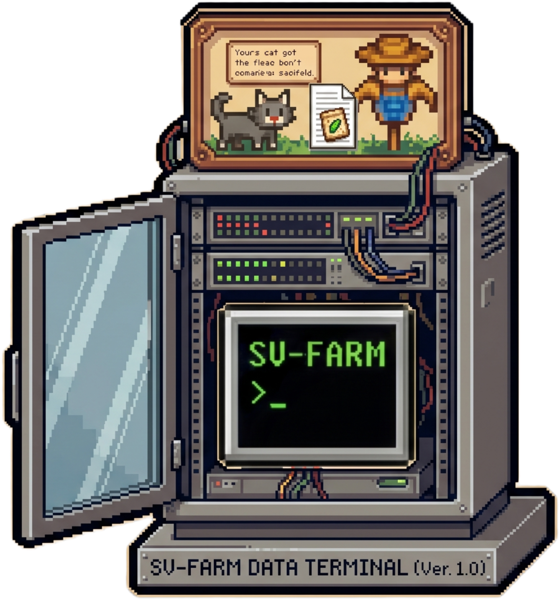

Machine
Human
Hybrid
Home
Timeline
Thoughts
Experiments
Thesis
What will art look like?
Pre-AI: Craft & Labor
Early AI: Assistance
Now: Generation
Future: Simulation
Is art still meaningful?
Human: Meaning comes from intent.
AI: Meaning is pattern recognition.
Who is the author?
Human: The creator.
AI: The system.
Experiments
[glitch-y surrealsim ]]

[stardew valley thing]]
[surrealism + biodesign thing]]
[weird experimental graphic design]
[harajuku gore]
[glitch + zen koans]
[textiles + data viz]
[brutalism + electronics]
The question is not what art will look like — but what caring about art will look like.
Authenticity: --%